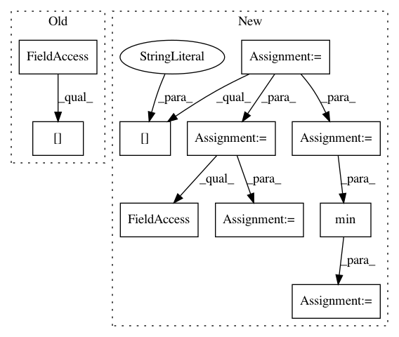

0110937ab04f4298f98963bed1de08962d776b24,src/fonduer/utils/data_model_utils/structural.py,,common_ancestor,#,172
Before Change
:param c: The binary-Mention Candidate to evaluate
span1 = _to_span(c[0])
span2 = _to_span(c[1])
ancestor1 = np.array(span1.sentence.xpath.split("/"))
ancestor2 = np.array(span2.sentence.xpath.split("/"))
After Change
:param c: The multinary-Mention Candidate to evaluate
spans = [_to_span(i) for i in c]
ancestors = [np.array(span.sentence.xpath.split("/")) for span in spans]
min_len = min([a.size for a in ancestors])
arrays = np.array([a[:min_len] for a in ancestors])
arg_min = np.argmin(arrays[:-1] == arrays[1:], axis=1)
val = np.min(arg_min[np.nonzero(arg_min)])
return list(ancestors[0][:val])
def lowest_common_ancestor_depth(c: Tuple[SpanMention, ...]) -> int:
In pattern: SUPERPATTERN
Frequency: 3
Non-data size: 10
Instances
Project Name: HazyResearch/fonduer
Commit Name: 0110937ab04f4298f98963bed1de08962d776b24
Time: 2020-07-01
Author: wajdikhattel@think-it.io
File Name: src/fonduer/utils/data_model_utils/structural.py
Class Name:
Method Name: common_ancestor
Project Name: HazyResearch/fonduer
Commit Name: 0110937ab04f4298f98963bed1de08962d776b24
Time: 2020-07-01
Author: wajdikhattel@think-it.io
File Name: src/fonduer/utils/data_model_utils/structural.py
Class Name:
Method Name: lowest_common_ancestor_depth
Project Name: librosa/librosa
Commit Name: 320cbfd379a8e8de6ff49eeba35ca16750e80d38
Time: 2015-08-25
Author: brian.mcfee@nyu.edu
File Name: librosa/core/audio.py
Class Name:
Method Name: autocorrelate